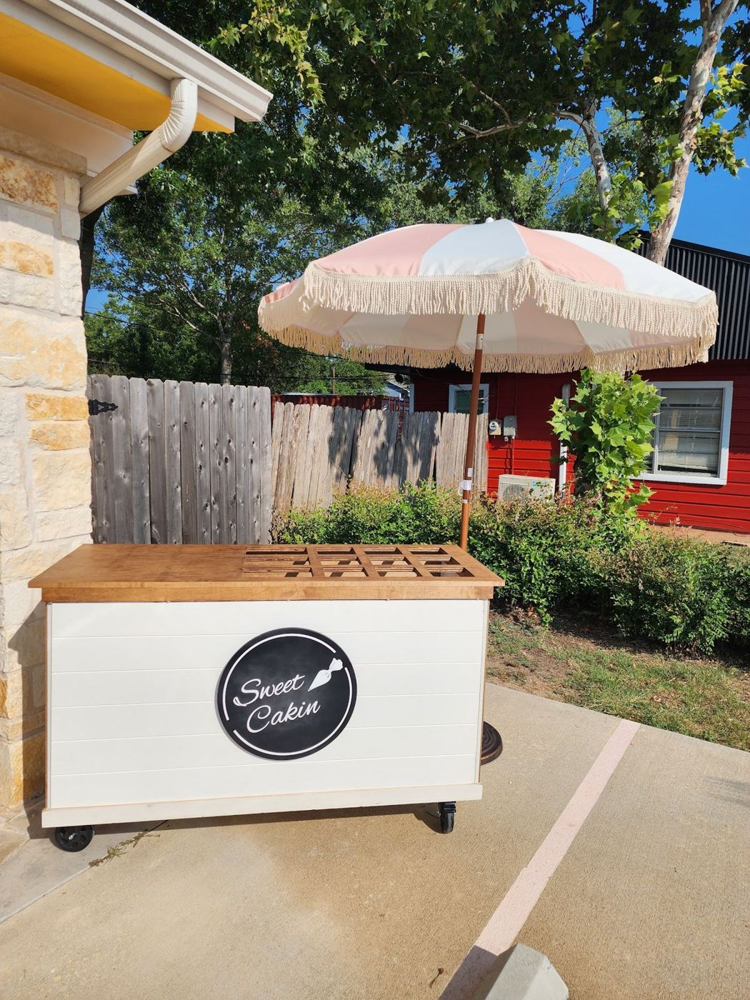
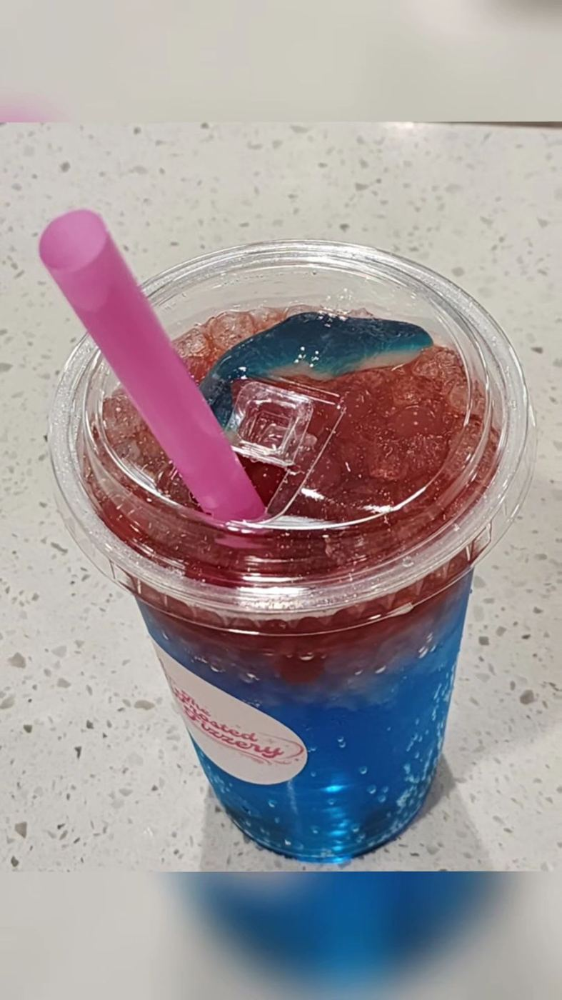
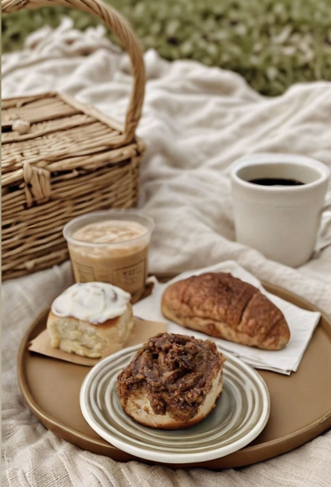
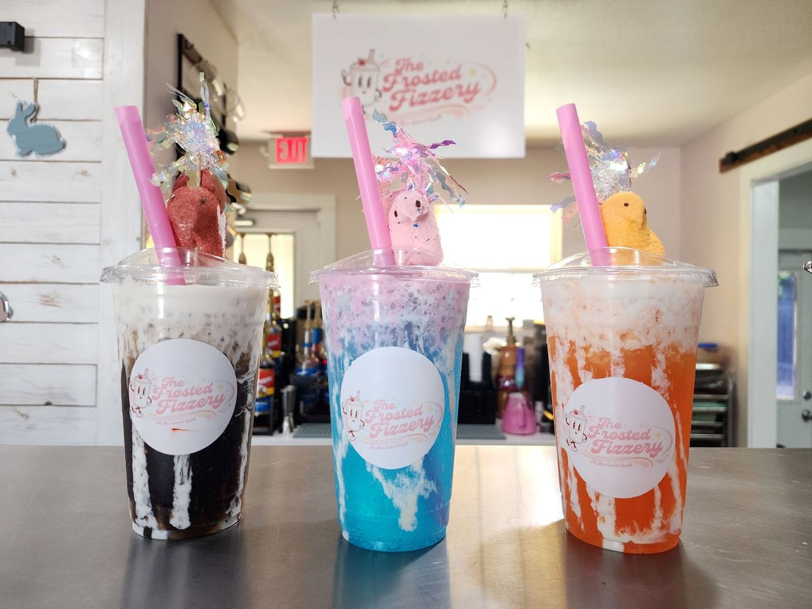
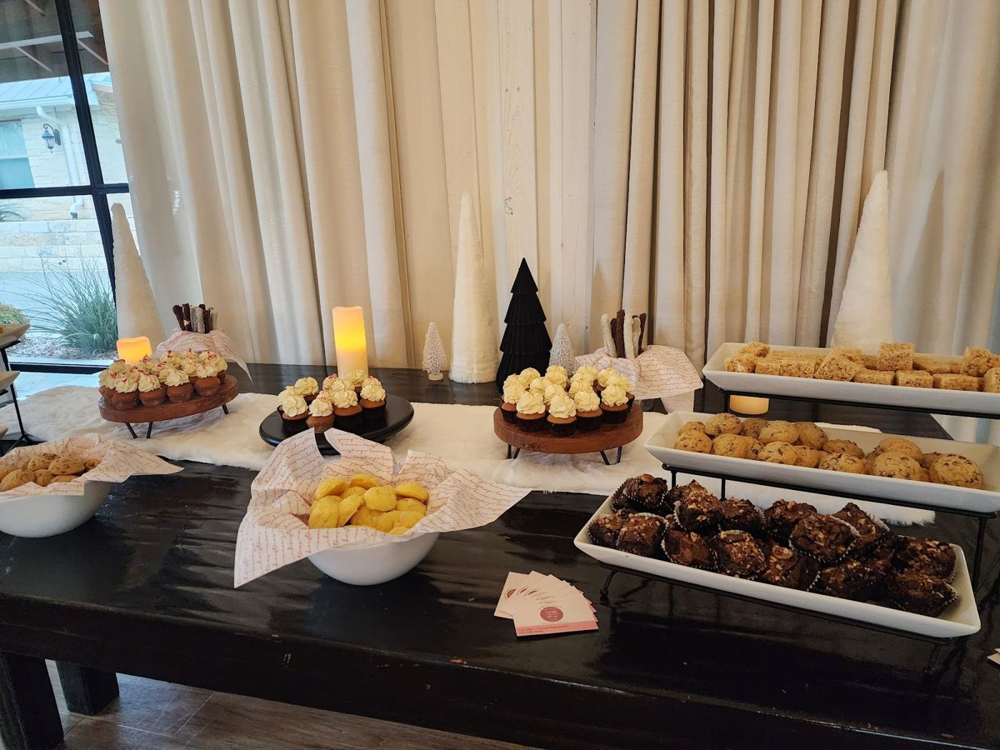
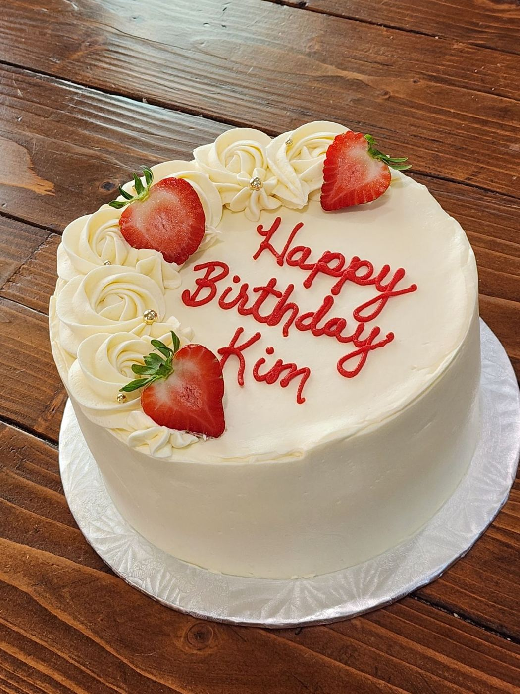
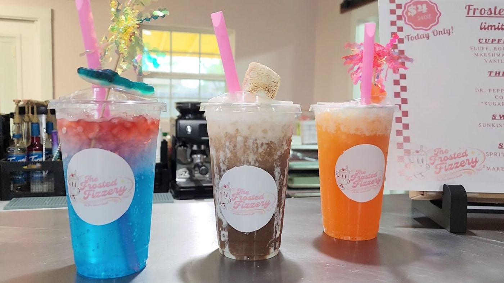
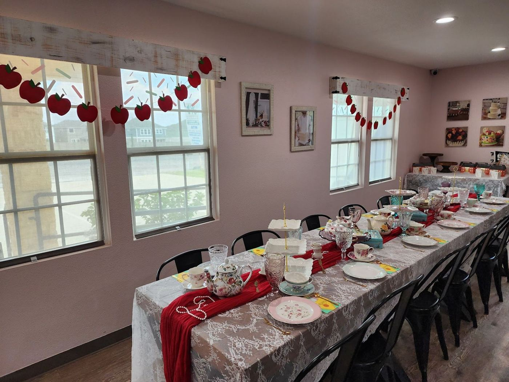
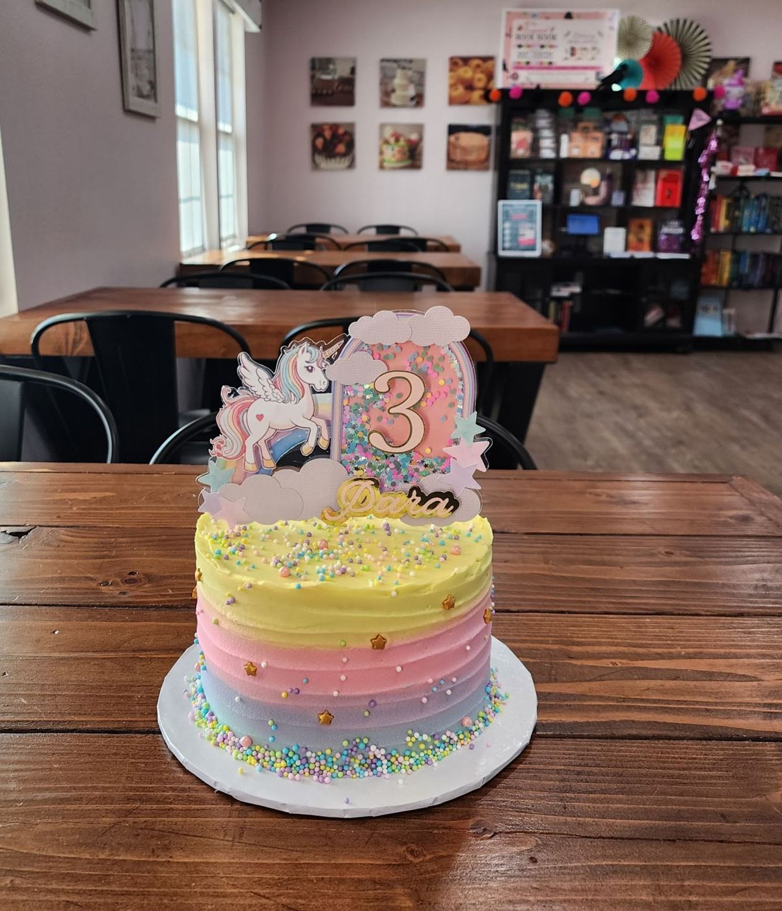

Bakery & café · Leander, TX
Cakes, coffee & sweet little parties.
A cozy hidden gem on US-183 for custom cakes, gluten-free treats, lattes and hands-on decorating classes.
4.9★ · 71 Google reviews
Call (512) 528-4286What we bake


treats
What we bake
Custom cakes
Moist, not overly sweet, and beautifully decorated, from Oreo birthday cakes to whatever you have in mind.
Gluten-free cupcakes & scones
Customers call them the best they have ever had.
Coffee & lattes
Good drip coffee and a latte reviewers call delicious.

Cake decorating classes
Private classes for birthdays and friends, personalized to your requests.

Parties & events
Girl Scout tea parties, book clubs, book bedazzling and cake painting.

From the case




Sweet words
Today was my third trip to Sweet Cufé and once again, 10/10. Sweet Cupfé had been on my list of places to visit for a while, but I finally made it out when they collaborated with Next Chapter Bookstore for their Sunday book club last month. Since then, I’ve been to their book bedazzling and just today a cake painting. I don’t know where to start. The events they put on for the community are fun, important, and wonderful. Lizz is an absolute GEM! I love that she cares so much about the people coming into her bakery and gets involved in all of our conversations. I always leave feeling so…
Thank you so much for my son’s chocolate Oreo birthday cake! It was moist and delicious. The icing was the perfect amount of sweet. We all enjoyed it very much! They were also very warm, friendly and welcoming. Highly recommend!
Such a cute little bakery in Leander. They hosted a Girl Scout tea party and everything was phenomenal. The food was tasty, the decorations were adorable, and the hosts were friendly and sweet. Have never been to this bakery before, but I definitely will be back to support them. Loved the entire experience.
Visit The Sweet Cupfé
- Mon–Tue — Closed
- Wed–Fri — 8 AM–5 PM
- Sat — 8 AM–3 PM
- Sun — Closed
- 305 US-183, Leander, TX 78641
- (512) 528-4286